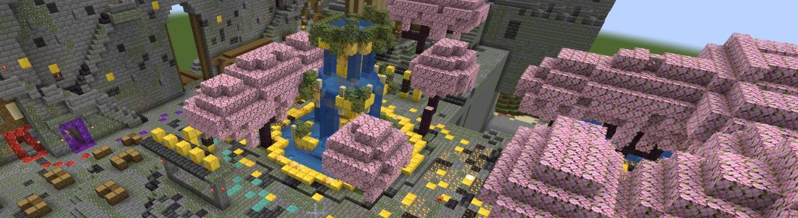
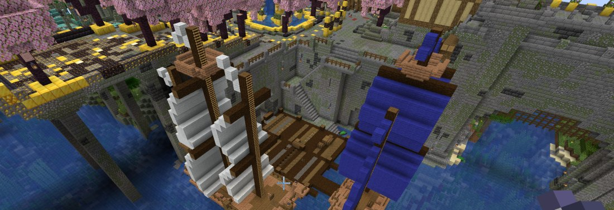
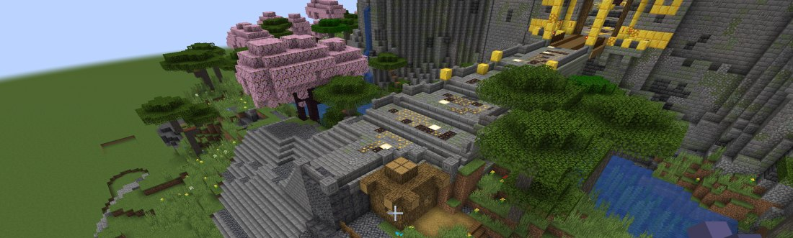

Заклинания из слов
Никаких списков готовых заклинаний.
Ты говоришь богу, чего хочешь — он создаёт заклинание, его вид и цену.
Каждое — единственное в мире.
Сервер Minecraft 1.20.1. Опиши заклинание словами — и бог создаст его для тебя. Такого больше ни у кого не будет.
Никаких списков готовых заклинаний.
Ты говоришь богу, чего хочешь — он создаёт заклинание, его вид и цену.
Каждое — единственное в мире.
Яндо — разрушение, культ и Золотой город.
Аргон — знание, шрамы и тьма.
У каждого свой нрав, и каждый одаривает по-своему.
Сердце острова и убежище.
Здесь торгуют, берут поручения и слушают слухи — а жители помнят, что с ними говорили.
Когда-то там была столица магов.
Теперь — земли, в которые лучше не ходить одному.
Чем дальше, тем больше там того, ради чего стоит рискнуть.
Основай клан, займи землю, поставь свои законы.
Защищай её — или забирай чужую.
В логовах ждут боссы — и со временем каждый становится другим.
А из их добычи куётся оружие, которое помнит своего врага.



Windows 10 или 11, 64 бита. Около 20 МБ; игра докачается сама (около 700 МБ).
Запусти установщик и нажимай «Далее». Права администратора не нужны.
Если Windows покажет синее окно «Система Windows защитила ваш компьютер» — нажми «Подробнее» → «Выполнить в любом случае». Так Windows встречает любую новую программу без платной подписи.
Лаунчер сам скачает игру, моды и Java и зайдёт на сервер. Обновления — тоже сам.
Скачай файл сборки и добавь его в лаунчере как новую сборку из файла. Мод и всё нужное скачаются при первом запуске игры.
Скачай архив и распакуй его целиком в папку игры (обычно %APPDATA%\.minecraft), с заменой файлов. Перезапусти лаунчер и выбери версию Verbum-1.20.1 — в официальном её нужно добавить: «Установки» → «Новая установка».
Подробная памятка — в самом архиве. Игре нужно не меньше 4 ГБ памяти.
Для списка серверов в игре:
Загружаю…
Донат — это внешний вид и удобства: ранги, облики, титулы, украшения. Силы и преимуществ в бою он не даёт.